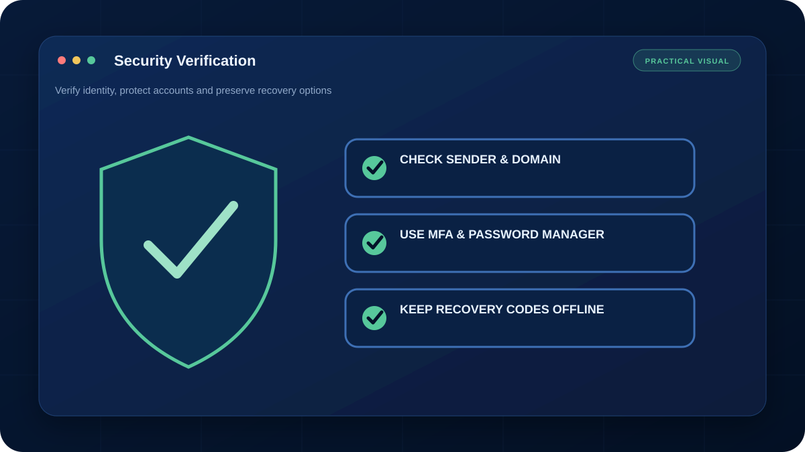

ชื่อผู้ส่งและโลโก้ปลอมได้ อย่าตัดสินจากหน้าตาอีเมลเพียงอย่างเดียว ให้ตรวจ Domain จริงและยืนยันผ่านช่องทางที่หาเอง
Phishing ที่ดีอาจเขียนภาษาได้เนียนและอ้างเหตุการณ์จริง จุดสำคัญคือการตรวจบริบท เทคนิคของลิงก์ และคำขอที่ผิดจากกระบวนการปกติ
1. Checklist 7 จุด
- ชื่อและ Domain ผู้ส่งตรงองค์กรจริงหรือไม่
- Reply-To ต่างจากผู้ส่งหรือไม่
- ลิงก์พาไป Domain ใดเมื่อชี้เมาส์
- มีการเร่งให้โอนเงิน ล็อกอิน หรือเปิดไฟล์หรือไม่
- ไฟล์แนบชนิด EXE, ISO, ZIP หรือ Office ขอเปิด Macro หรือไม่
- ข้อความข้ามขั้นตอนอนุมัติเดิมหรือไม่
- ยืนยันกับเจ้าของเรื่องผ่านเบอร์หรือแชทที่หาเองแล้วหรือยัง
2. ระวังหน้าล็อกอินปลอม
ตรวจชื่อ Domain ตัวอักษรสลับและ Subdomain อย่าเชื่อเพียงรูปกุญแจ เพราะเว็บปลอมก็มี HTTPS ได้ ใช้ Bookmark หรือเปิดเว็บไซต์จากแอป/หน้าเว็บที่รู้จักแทนการกดลิงก์ในอีเมล
3. หากกดลิงก์แต่ยังไม่กรอกข้อมูล
ปิดหน้าเว็บ ล้างไฟล์ดาวน์โหลดที่ไม่เปิด ตรวจ Browser Extension และสแกนเครื่อง หากอนุญาต Notification หรือดาวน์โหลดไฟล์แล้ว ต้องยกเลิกสิทธิ์และตรวจเพิ่ม
4. หากกรอกรหัสหรือเปิดไฟล์แล้ว
เปลี่ยนรหัสผ่านจากเครื่องที่เชื่อถือได้ ออกจาก Session อื่น เปิด MFA แจ้งผู้ดูแลและตรวจ Rule ในอีเมล เช่น Forwarding ที่ผู้โจมตีอาจสร้างไว้ หากเกี่ยวข้องกับการเงินให้ติดต่อธนาคารหรือผู้เกี่ยวข้องทันที